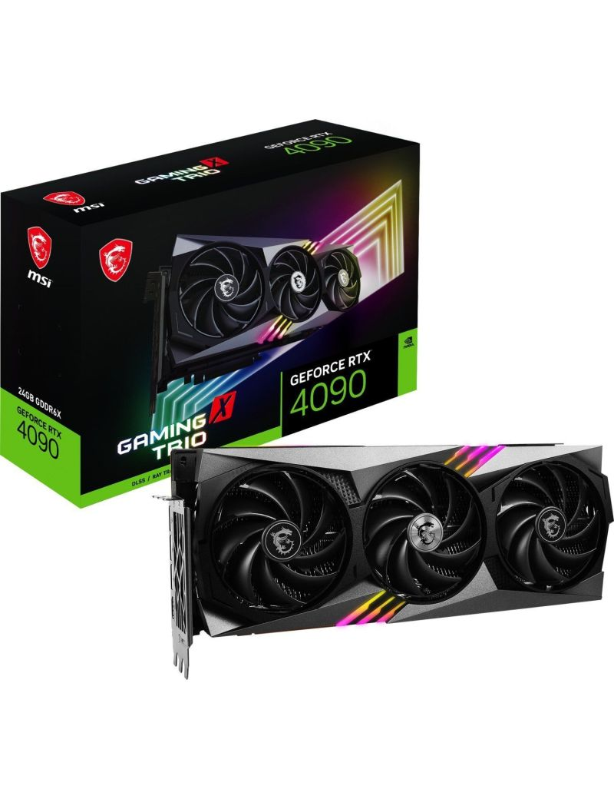

Witamy w Świat Komputerów!
Informacje o kartach graficznych
Karta graficzna w największym skrócie to komponent naszego komputera odpowiedzialny za tworzenie i wyświetlanie obrazów. Dodatkowo, wspiera ona działanie procesora i ogólnie rzecz ujmując poprawia wydajność całego komputera. Bardzo często spotkamy się też z tożsamą nazwą GPU. Jest to angielski skrót od graphics processing unit. Obu tych pojęć możemy swobodnie używać zamiennie – pomimo tego, że teoretycznie nie oznaczają tego samego. Jeśli trzymać się sztywnej nomenklatury, to GPU jest częścią karty graficznej.